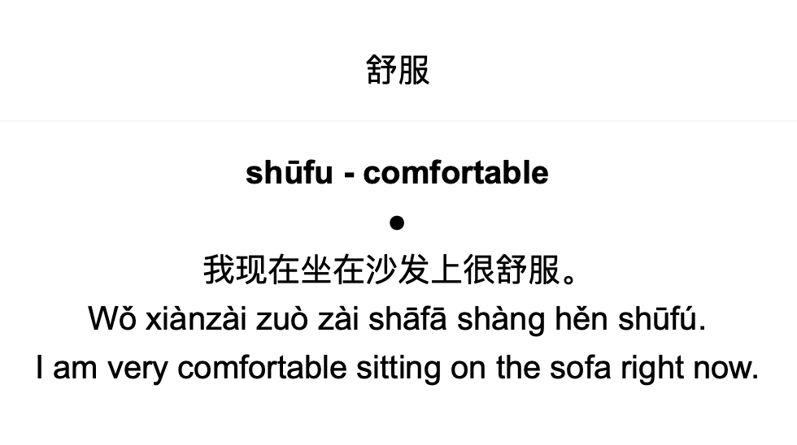

How to make your own Anki flashcard generating assistant
How to use AI to generate Anki flashcards for language learning.
Why automatically generate flashcards?
When studying for the Chinese language proficiency tests, HSK-1 and HSK-2, I found that I was spending far too much time on creating flashcards. It would often spend around 5-10 minutes per flashcard. From looking up the definition of the word, getting the pinyin with the right tones, ensuring correct formatting of the card, and coming up with an example sentence. Particularly with the example sentences, with limited understanding of Chinese to begin with, coming up with example sentences was extremely challenging. Moreover, when I checked the cards with a native Chinese speaker, there would still be mistakes, strange wordings, and other issues present. Although some of these problems may be due to being a novice in flashcard making, I found that I was spending more time creating flashcards than actively studying the language. Additionally, the more flashcards I made, I would notice small changes in the formatting or additional information which I wanted to add, and then need to go back and edit all the flashcards all over again.
I figured many of these issues could easily be solved by leveraging AI to generate the decks. In the same amount of time it would take to finish the HSK-1 flashcard deck, I could code up my own flashcard making assistant. This assistant would allow me to quickly tailor the examples to my interests and needs, and quickly change the format and information on the flashcards as my learning learning needs changed. If I wanted to re-generate some cards, because I had simply memorised the card rather than the content, it could all be done in the click of a button.
Enough about the the why, and let’s look at the how. The code itself is quite simple, consisting of less than 150 lines of documented code which you can find it over on my GitHub. The process of generating the flashcards can be broken down into three simple steps.
- Getting a list of words which you want to learn
- Design an appropriate prompt and flashcard templates based on your needs
- Feed the words into chatGPT using the prompt template developed and use the output to populate the flashcard template
There are a few bits and bobs around these steps, such as setting up the communication with ChatGPT and learning how to create decks with genanki. The essence of the code really boils down to the templates, as these are what fundamentally capture your specific query and needs.
Get a list of words which you want to learn
First step is getting the list of words which you want to learn. This was fairly straightforward as I was able to pull the HSK vocabulary directly from the web using a dataset put together by lemmih. Here, I can pull the list of the HSK vocabulary from level 1 through 6 directly into the code. Naturally, if you have your own dataset, this can simply be read in from a local file or another available source.
#Imports
import pandas as pd
#Specify HSK level dataset to read
hsk_level = 1
wordlist_file = f"https://raw.githubusercontent.com/lemmih/lesschobo/master/data/HSK_Level_{hsk_level}_(New_HSK).csv"
#Read in word list file
word_df = pd.read_csv(wordlist_file, index_col=0, header=1)
#Data-source specific formatting, in this case, removing any words which do not correspond with the appropriate HSK level.
mask = [str(x)[0] == str(hsk_level) for x in word_df["HSK \nLevel-Order"]]
words = word_df.loc[mask, "Word"].valuesDesign prompts
Flashcard template
For the flashcard template, we can follow the guidance from the genanki repo. The flashcard templates can be tinkered with through the HTML and custom CSS. When designing the template there were a few things which I wanted:
Front of card
- Only the character for the word which I wanted to learn with no pinyin
Back of card
- Pinyin of the word
- The English definition of the word
- An example sentence in Chinese with the pinyin and an English translation.
When designing the cards, I also wanted the definition to pop out, with the example sentence taking a secondary weight and therefor wanted to separate the definition and the example sentence by a clear marker. The design adopted looks something like this:

The code for the card template can also be found in the github repoPrompt template
For the chatGPT prompt, I needed to make sure that relevant information to fill out the flashcard template was returned and in a standardised format. To ensure that the definition of the word was clear, I ran two separate queries, one to extract the definition of the word, and another one to formulate the example sentence. Additionally, for both instances, additional context was passed to chatGPT to set the scene and help shape the format and content of the response.
#Word to translate (A list of words would be iterated through)
word = "舒服"
#Context and query to be sent to chatGPT for translation of words.
gpt_translate_context = 'You are a Chinese to English dictionary, providing concise translations. You only return the translation and pinyin.'
gpt_translate_query = word
#Context and query to be sent to chatGPT for generating example sentences.
gpt_sentence_context = 'You are a helpful assistant that is helping an English speaker to learn Chinese. Try to use simple words in the HSK1 to HSK3 vocabulary lists.'
gpt_sentence_query = f'Create a short example sentence in Chinese that uses "{word}". Include the translated sentence, the pinyin, and english translation, each separated by a new line.'The above prompts could further be tweaked and improved, however, I found these to be sufficient for my use-case for now, but will likely update this in the future. Additionally, it may be possible to group together queries to reduce the cost of calling the API, however, this cost is already minimal so it’s not a major concern. For several flashcards, there were a few inconsistencies in the formatting, I have fixed these manually as I noticed them while revising, but with slightly better prompt engineering it could probably be fixed from the get-go.
Run query and generate deck
Once the templates are generated, the rest of the process is relatively trivial. Simply set up the connection with chatGPT through the preferred method (note that you will need a ChatGPT api key for most methods). If created the prompt templates directly in the code, they can be easily populated using .format or through the use of python’s f-strings.
Depending on how good your prompts are and the format of your flashcards, you may need to conduct some cleaning on the chatGPT output before passing it to the Anki deck. Once all the words in the list are iterated through and generated, you’re golden. Just need to save the Anki deck and can then directly import the the .apkg file into Anki.
When automatically generating Anki decks may or may not work
I have found generating these Anki decks for language learning to be extremely useful. If I get bored of a set of examples, I can simply re-generate the examples/ Additionally, I can simply take note of words which I may not know and come across on my day-to-day, and quickly generate a deck to revise those words. Furthermore, instead of spending lots of time coming up with example sentences, I can simply ask ChatGPT to create examples that limit the vocabulary to HSK-1 to HSK-3. I can then tweak the examples based on my proficiency, or if there are specific areas of interest where I want the examples to be more focused towards.
Using chatGPT is a great tool for language learning since a lot of language learning is relatively standard. The definitions of words don’t change too much, it’s not a very hard task to come up with some example sentences. Where this may become more problematic, is if you’re relying in ChatGPT for factually correct information, e.g. if you need to study for an exam. In these instances, tools such as this should be approached with caution.
Future avenues of improvement
The main area of improvements will be around refining the prompts and the card template for the given needs. However, there are many new additions which I may have a look at adding in the future. For one, we could have a look at generating AI images based on the example sentences. As AI generated images can often be a bit… quirky, they may provide a really good mental anchor for remember a specific word. Additionally, one of the lacking features I have found with the current deck is that I cannot listen to the pronunciation of words. This has been good for forcing me to read the characters, but may be beneficial in some instances. Adding such a feature may also be beneficial, particularly for language learning. I think something which may be on my list in the future would be to see if I can find a way to break-down the characters to their fundamental radicals to help get a better understanding of the word in context to other words.
Feel free to clone my repo over on github and ask away if there are any questions! The code is currently set up for learning Chinese, however, with a bit of tinkering it should be easy enough to adjust the code to work for any language or other learning endeavors.
Feature image source: www.unsplash.com
Disclaimer: Views are my own and do not reflect the views of my employer